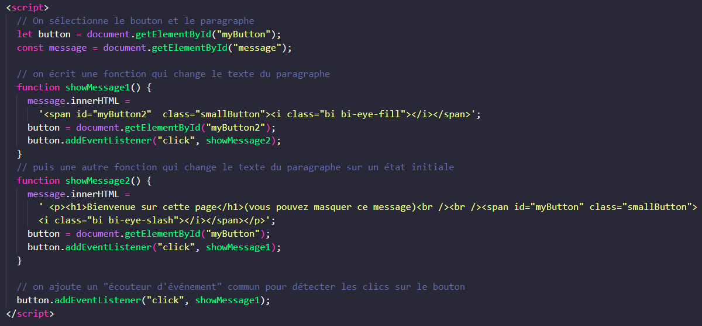

-
Comment faire ? nous remplaçons le "texte A" de départ, par un "texte B", qui au clic rappellera un nouveau "texte A bis" , similaire au texte A pour créer l'illusion de boucle.
Ce script fonctionne mais c'est un "peu lourd" et de plus "innerHTML" est à eviter.
- innerHTML ? injecter du code html est une faille de sécurité, il faut eviter de l'utiliser. D'ailleurs cette proprieté empeche souvent de passer les validateurs js

nous allons donc tester une autre méthode pour le même effet dans l'exercice suivant. Un effet toggle en jouant sur la classe display none / block de l'element sera plus élégant, optimisé, sécure.